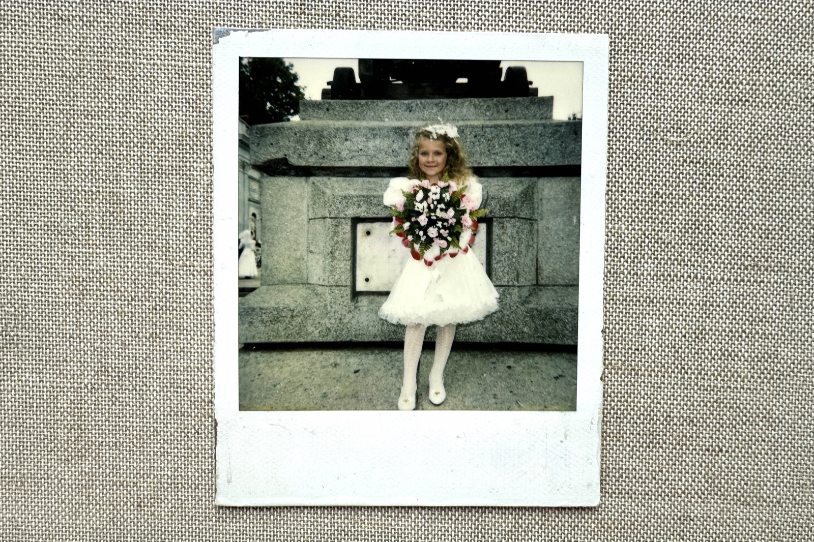
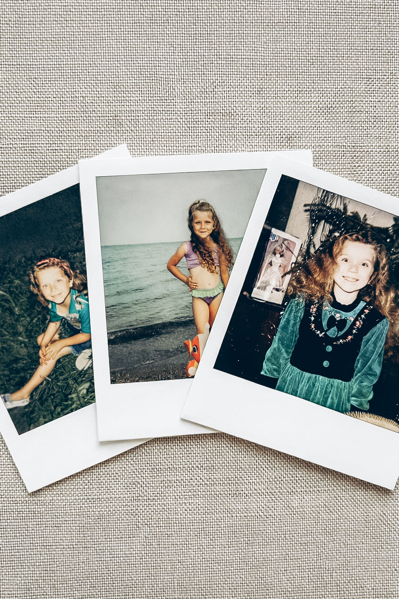

Jedno video z celého dětství
Bylo mi pět let, když se vdávala moje teta.
Dodnes si pamatuju, jak jsem jako malá holka obdivovala fotografa a kameramana, kteří tam celý den pobíhali s fotoaparátem a kamerou. Fascinovalo mě, že někdo může dělat takovou práci. Být u důležitých okamžiků, všechno pozorovat a uchovávat.
Tehdy jsem ještě netušila, jak moc pro mě jejich práce jednou bude znamenat. Z té svatby totiž vzniklo jediné video z mého dětství, na kterém jsem já malá. A právě ten tříhodinový záznam jsme si jako rodina čas od času pustili. Všichni jsme se sešli, koukali na obrazovku, smáli se a vzpomínali.
Pro mě je to video dodnes nesmírně vzácné.
A pak se po letech vrátil Polaroid

Když jsem byla malá, dostala jsem k narozeninám Polaroid.
Nějakou dobu jsme s ním fotili, potom jsme se stěhovali, život šel dál a fotoaparát nakonec zůstal někde na půdě.
Až teď, po letech, ho děda znovu našel.

V době, kdy už jsem dospělá a žiji svůj vlastní život, mi ho poslal z místa, kde dnes kvůli válce není možné žít tak, jak jsme byli zvyklí.
Držet ho po tolika letech znovu v rukou bylo zvláštní.

Najednou jsem měla před sebou malý kousek svého dětství, který na mě celou tu dobu čekal.
U mě najdete hodně fotoaparátů, ale jen tento v sobě ukrývá vůni mého dětství.
Připomíná, že ty největší poklady nevznikají v objektivu, ale v srdci.

Vím, že to, co je dnes pro vás obyčejným dnem, může být jednou jedním z nejvzácnějších pokladů, které budete mít.
A právě proto dnes fotím a natáčím rodiny.